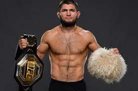

Bienvenido a la pagina web supersonica sobre las artes marciales. En esta página, aprenderemos un poquito más sobre estos tipos de deportes y conoceremos a algunas de sus figuras más importantes.
La mayor leyenda que ha existido en las artes marciales es sin duda Bruce Lee. Su influencia sigue siendo tan grande hoy en dia
que esta considerado como el padre de las artes marciales mixtas.

Si hablamos de artes marciales mixtas, tenemos que mencionar a khabib nurmagomedov. Campeon invicto del peso ligero de la UFC y considerado uno de los mejores luchadores de la historia.
Tambien podemos mencionar al peso pesado Mirko cro cop y su famoso movimiento de firma, una rápida patada a la cabeza descrita como ≪pierna derecha, al hospital, pierna izquierda, al cementerio≫

No podíamos dejar sin mencionar a la autentica bestia del boxeo, el gran Mike Tyson quien es el campeón del peso pesado más joven en la historia del boxeo